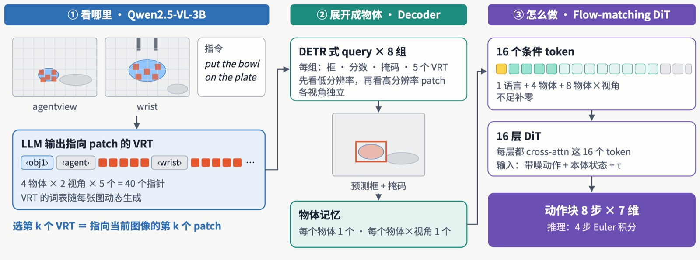

Grounding-first VLA: Localize via Visual References, Then Act Grounding-first VLA：视觉引用引导的定位与动作生成
Research intern研究实习 · Qwen2.5-VL-3B / PaDT-inspired Grounding / Flow-Matching DiT / LIBERO

92% → 98.3%
avg. success on four LIBERO suitesLIBERO 四套任务平均成功率
- Autoregressive architecture. Built on starVLA with Qwen2.5-VL-3B: a dual-view dynamic vocabulary produces VRTs, and PaDT-style two-way attention predicts boxes, masks and confidences. An Affordance Token Bridge fuses references, mask-pooled and spatial features, which together with the raw VLM context condition a 16-layer flow-matching DiT that outputs 8-step × 7-D action chunks.
- Parallel decoding. Learnable query tokens with task-role and camera-view encodings predict visual-patch reference distributions in a single VLM forward pass, replacing autoregressive decoding with differentiable soft references; offline PaDT-teacher distillation and action-alignment training cut the per-token decoding cost of grounding.
- Results. Raised the average success rate of the existing grounding model on the four LIBERO suites from about 92% to 98.3% (≈ +6 points).
- 自回归架构：在 starVLA 上以 Qwen2.5-VL-3B 和双视角动态词表生成 VRT，经 PaDT 式 two-way attention 预测框、掩码与置信度；新增 Affordance Token Bridge 融合引用、掩码池化及空间特征，与原始 VLM 上下文共同条件化 16 层 Flow-Matching DiT，生成 8 步 × 7 维动作块。
- 并行优化：引入带任务角色与相机视角编码的可学习查询 Token，通过一次 VLM 前向并行预测视觉 Patch 引用分布，通过可微 soft references 替代自回归解码；设计离线 PaDT Teacher 蒸馏与动作对齐训练，降低视觉定位的逐 token 解码开销。
- 实验结果：现有 Grounding 模型在 LIBERO 四套任务上平均成功率由约 92% 提升至 98.3%（约 +6 个百分点）。